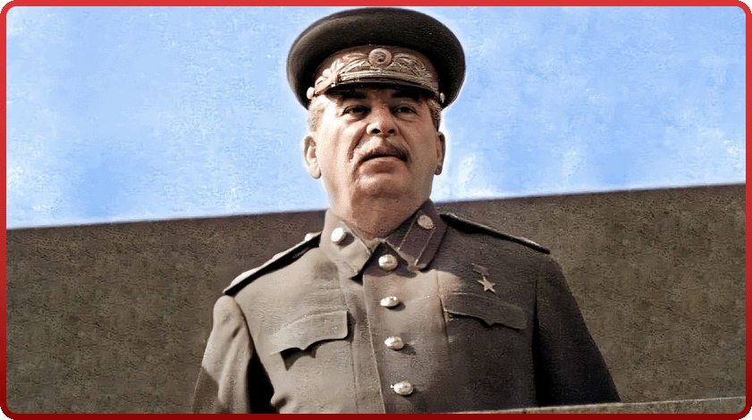
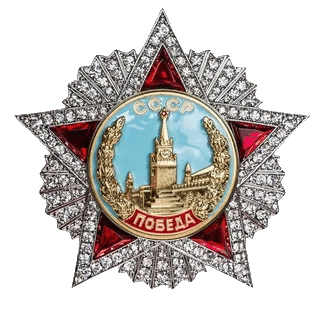
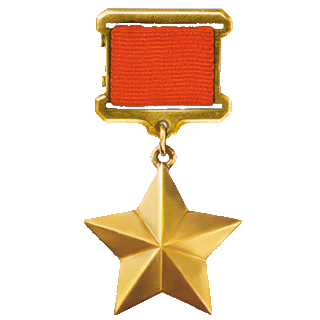
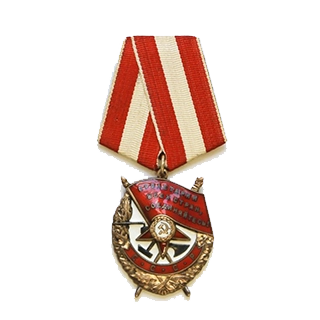
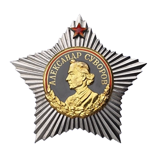
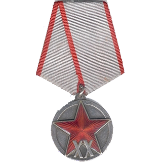
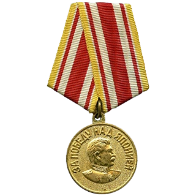

ИОСИФ ВИССАРИОНОВИЧ СТАЛИН
(1878-1953)
Иосиф Виссарионович Сталин родился в грузинском городе Гори в семье сапожника. С 1922 года и вплоть до своей смерти он занимал пост Генерального секретаря Центрального Комитета партии, хотя во всех редакциях партийного устава эта должность де-юре отсутствовала. С 1941г. занимал должность Председателя Совета Народных Коммисаров/ Совета Министров СССР. В наше время правление Сталина в основном сводят к репрессиям, забывая о том, что именно под руководством этого человека стране пришлось совершить невообразимый до того времени скачок в экономике и культуре. Именно при И.В. Сталине, который был Председателем ГКО и Верховным главнокомандующим, наш народ смог победить в Великой Отечественной Войне. Никто не отрицает,что во время правления Сталина было совершенно много ошибок и даже преступлений. Но, к сожалению, за последние десятилетия появилось огромное количество авторов, которые не пытались разобраться в событиях того времени, а, наоборот, стали создавать огромное количество мифов,которые долгое время выдавались за правду. Но история начала свой суд, благодаря фундаментальным работам многих историков, удалось разоблачить большинство мифов об этом человеке и его правлении. И у большой части наших людей имя Сталина символизирует великий подвиг народа в строительстве индустриальной сверхдержавы и победу в самой разрушительной войне за всю историю человечества.
НАГРАДЫ И.В. СТАЛИНА









